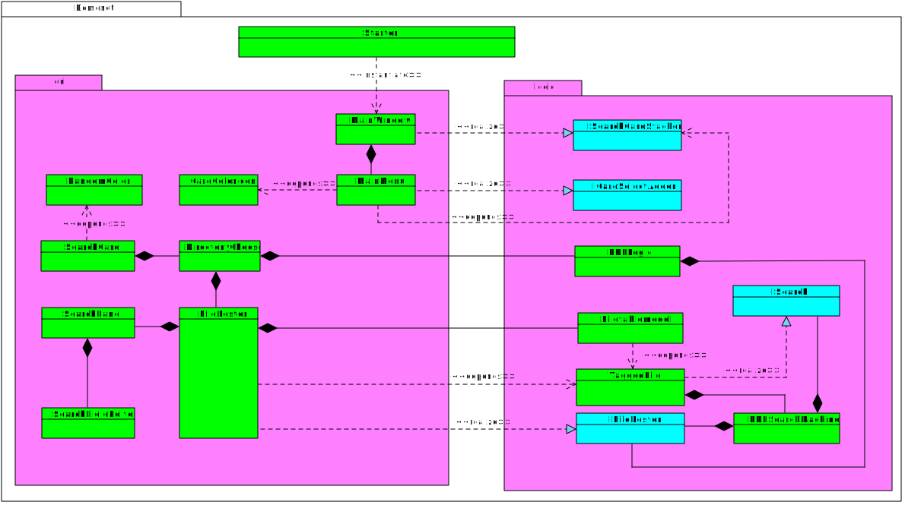
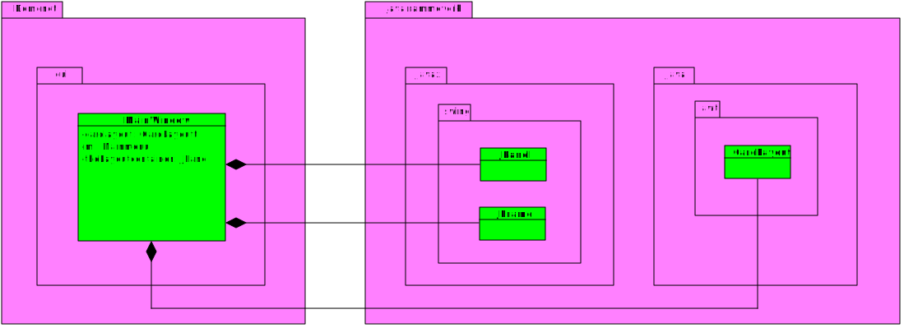
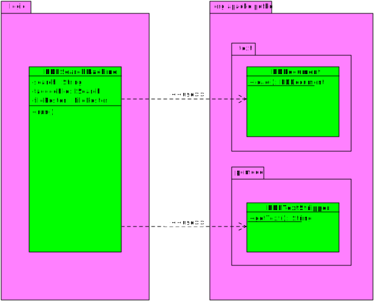
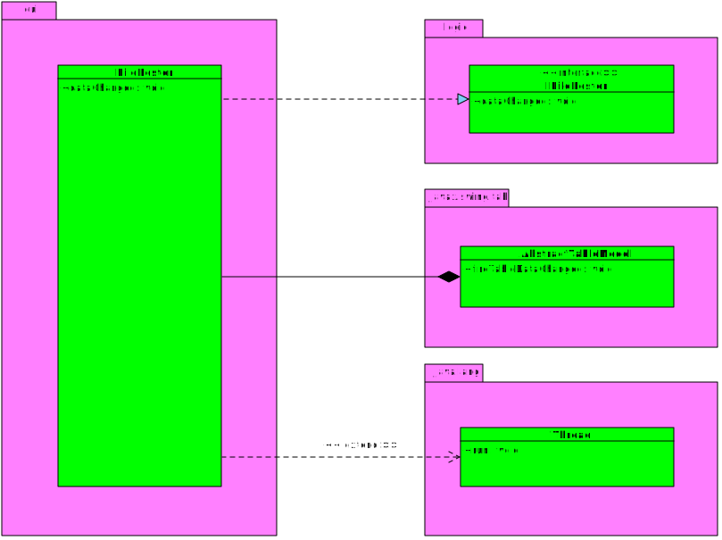
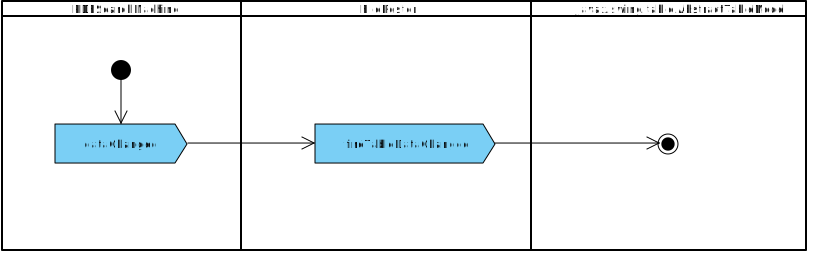
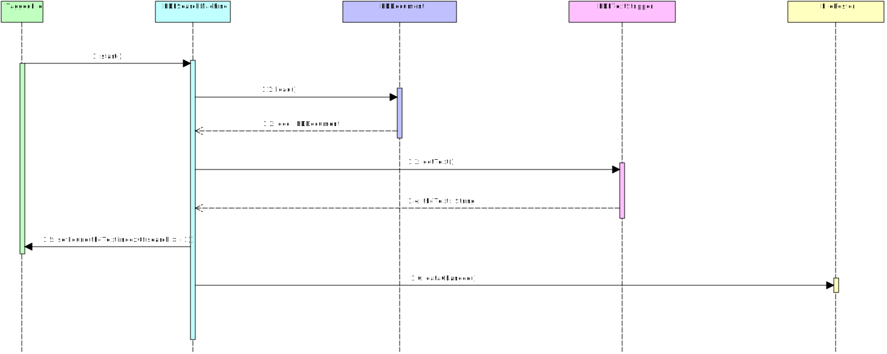

Eksamen objektorientert analyse og design
Oppgaveteksten
Besvarelser
Koden som er analysert i dette prosjektet er et relativt lite prosjekt. Prosjektets nytteverdi
er at den lar en bruke lete frem til PDF-filer på datamaskinen og søke igjennom disse.
Et annet perspektiv på koden er at en viser hvordan man kan bruke java til å håndtere PDF-filer ved hjelp
av et bibliotek.
I diagrammene har vi brukt lilla for pakker, grønn for klasser og turkis for interface.
Overordnet struktur for domeneklassene
Dette diagrammet viser helt overordnet hvordan det forskjellige domeneklassene sine relasjoner er kodet.
Diagrammet har kun inkludert domeneklasser, det vil si klasser som ikke tilhører java-rammeverket, men er laget spesifikt for dette
prosjektet.

Strukturanalyse (MainWindow)
I dette diagrammet vises Java-rammeverksklassene som MainWindow-klassen bruker for å interagere med andre domeneklasser.

Detaljert strukturanalyse (Apache PDFBox)
I diagrammet under vises strukturen i forholdet mellom PDFSearchMachine (domeneklasse) og klassene i
org.apache.pdfbox-pakken. Diagrammet fokuserer på strukturen mellom klassene og hvordan PDFSearchMachine benytter de underliggende
klassene i org.apache.pdfbox-pakken.

Aktivitets- og strukturdiagram (dataChanged)
De to neste diagrammene viser hvordan dataChanged-metoden forholder seg til andre strukturer i koden.
Det første diagrammet er et strukturdiagram og det neste er et aktivitetsdiagram.


Sekvensdiagram for meldingsforløp
Under vises et diagram over sekvensen av funksjonskall som utføres i tråden som søker i PDF-filen.
